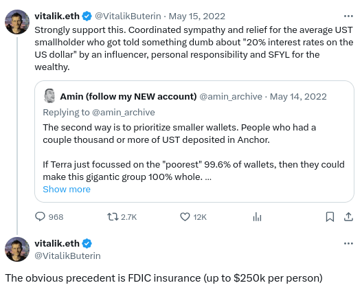
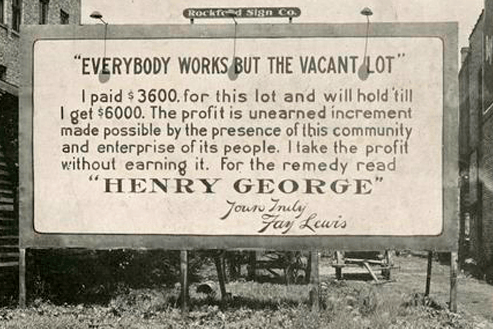
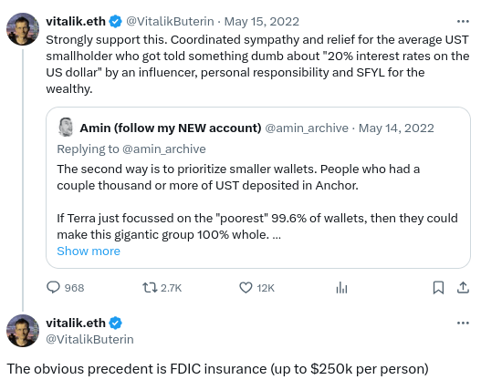
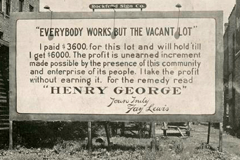

Degen communism: the only correct political ideology
2024 Apr 01
See all posts
Degen communism: the only correct political ideology
In 2024, there is a widespread feeling throughout the Western world
that all of our political ideologies are outdated, and are increasingly
failing us. Old ideas that have dominated elite political thought,
whether capitalism or liberalism or progressive social democracy or
whatever else, are rapidly losing popularity. The capitalists are
supporting tariffs. The libertarians are pushing to ban lab-grown
meat, and are actively railing
against the few in their ranks who still remember that
libertarianism is supposed to be about liberty. The "new authoritarians"
of the world, meanwhile, are hardly presenting an attractive
alternative.
Some are trying to respond to this crisis by reminding us of the
virtues of the old ideals of civility and decorum, hoping that we could
wind back the clock and return to them. My friend Dennis Pourteaux is a
good example of this kind of mentality:

The problem is that this is a fundamentally reactionary mentality,
and it fails for the exact same reasons why all other reactionary
mentalities fail. If before we were at political equilibrium A, and
today we are at political equilibrium B, then that alone is strong
evidence that A is unstable, and even if you somehow force a transition
back to A, the likely outcome is that we'll come right back to B
again.
As much as defenders of the ancien regime might wish otherwise,
pre-internet old guard elite notions of respectability and decorum are
simply fundamentally incompatible with the world as it stands in the
2020s. And so instead of trying to look backward, we need to look
forward. So what is the forward-looking ideology that solves these
problems? Degen communism.
What is degen communism?
What does the internet of the 2020s - not the "respectable" internet
of Substack, not a hypothetical version of Twitter where the bad people
and somehow only the bad people are censored, but the real internet as
it exists today - fundamentally want? The answer is, it wants
chaos. It does not want gentle debates between
professionals who "disagree on policy but agree on civics". It wants
decisive action and risk, in all its glory. Not a world with
genteel respect for principles, where even the loser peacefully accepts
defeat because they understand that even if they lose one day they may
still win the next, but a world with great warriors who are willing to
bet their entire life savings and reputation on one single move that
reflects their deepest conviction on what things need to be
done. And it wants a world where the brave have the freedom to
take such risks.
At the same time, the general welfare of humanity demands a
greater focus on the common good. We've seen too many instances
of epic collapses, orchestrated by failed machinations of the elites,
where the common people end up screwed but the elites remain immune or
even benefit. The 2008 financial crisis was itself an example of this.
Rapid advances in technology, and rapid openings in immigration and
trade, leave most people better off, but often leave jobless those who
are not in a good position to adjust. Rapidly growing tech companies"
disrupt" old extractive elites, but then quickly become
extractive elites themselves. But most proponents of the common good
associate the common good with extreme notions of "social stability",
which are often an excuse for keeping old extractive elites
entrenched, and in any case are lame and incompatible with the trends of
the 21st century. Like the occasional forest fire and its positive
effects on antifragility of natural ecosystems, chaos is the mother
of revitalization and renewal.
This brings me to the core idea of degen communism: a
political ideology that openly embraces chaos, but tweaks key rules and
incentives to create a background pressure where the consequences of
chaos are aligned with the common good.
Degen communist ideas can be adopted by any type of entity with a
network effect: crypto projects, social media sites, virtual game
environments and governments. Many of the core ideas are common across
all of these categories.
Cryptocurrency:
the avant garde in degen. Can it become degen communist?
The world of cryptocurrencies is one of the sectors of society that
embraces the "degen" the most. It has ups and downs that are unseen in
almost any other market. Meanwhile, the actual effects of the
downs are often smaller than they seem, which is why the space has not
collapsed completely. A 90% price drop erases billions of dollars of
value, but the average dollar lost is only lost in mark-to-market
book-value terms: it's people to held on the way up, and kept holding on
the way down. The average coin lost from a $100 million
defi hack is a coin that was worth ten times less two years earlier.
Sometimes, the unpredictable chaos also does good: many memecoins have
donated significant amounts to charity.
But even still, when the prices crash, especially due to sudden
failures of projects that promised their users stability, too many
people get hurt. Could we create a world where the chaos remains, but
the human harm that comes from the downfalls is 10x smaller?
Here, I will resurrect an idea that I supported during the Terra/Luna
collapse of 2022:

When projects collapse or get hacked, and only partial
refunds are possible, don't make the refunds proportional. Instead, make
smaller users whole first, up to some threshold (eg. $50k). Two
years ago, when I proposed this idea, many treated it with scorn, misrepresenting
the idea
as asking
for government
bailouts. Today, nobody seems to care about principles anymore, and so
even versions of this idea that are government-backed can
perhaps more easily get adopted. Here, though, I am not proposing
anything to do with governments; rather, I am proposing that project
teams put into their terms of service an expectation that in the event
of project insolvency, partial refunds will be prioritized in this way.
The only request to governments is that appropriate rules get passed so
that bankruptcy courts acknowledge the legitimacy of such
arrangements.
This mitigates the downsides of chaos toward the most vulnerable.
Now, what about better capturing the upsides of chaos? Here, I
support a combination of steps:
- Memecoins and games can donate
a portion of their issuance to charity.
- Projects can use airdrops that try their best to
distribute the most to individual users, as well as public good
contributors such as open source software developers, solo stakers, etc.
The Starknet
airdrop was an excellent demonstration of this, as were
other egalitarian airdrops like the ENS airdrop.
- Projects can have public goods funding programs
(whether proactive or retroactive). The first three rounds of optimism retro funding
were an excellent example; more projects should replicate this
model.
- If a governance token gets too concentrated, and the concentrated
players make bad decisions, the community should be more willing to
fork the project and zero out the tokens of the concentrated
players who made the bad decisions. This was done most
successfully in the Hive
fork of Steem.
Many of these ideas, especially those that depend on some notion of
"per-person", would have been very difficult to reliably administer in
2019. In 2024, however, we have more and more robust proof of personhood
protocols, proofs of community participation such as POAPs, and reusable
lists such as Starkware's
list of solo stakers that they used for their airdrop. Hence,
a degen communist future for crypto is very
possible.

The solution is to merge the two together. Keep the base
instinct, especially the base instinct of enjoying
watching things blow up, but tilt it toward the common good. In
exchange, the base instinct people can enjoy greater legitimacy.
Incidentally, maybe this is why that L2 is
called "Base".
What
might degen communism look like in government policy?
The two main forms of chaos in the broader world are social
media and markets. Rather than trying to
defang both, we should embrace both (especially markets), and try to
tilt them toward more often serving the common good. Politics is
inherently a more slow-moving domain, so the proposals will seem 10x
milder. However, the increased scale of their impact more than makes up
for it.
Land value taxes and YIMBY

Today, real estate markets in many parts of the developed world are
in crisis. In the most expensive regions, wealthy landowners earn
millions by simply holding on to pieces of real estate that they
acquired at dirt-cheap prices more than half a century ago. Rules like
California's
Proposition 13 mean that they only have to pay property taxes
calculated as though their plot still had a much lower price. At the
same time, many of these same people push
to maintain restrictive regulations that prevent more dense housing
from being built. This is a society that favors the rich. Traditional
leftists' favorite countermeasure, rent control rules, only benefit
people who stay in the same place for many years, at the expense of very
long waits for new people who want to come in. Meanwhile,
governments' ability to raise revenue to fund public services is limited
by the fact that if income and sales taxes are pushed too high, people
simply go somewhere else.
This status quo is the exact opposite of degen, and the opposite of
communist. And so a degen communist will seek to overturn all parts of
it. Instead of focusing on taxing income and business, which can flee a
state or country that taxes it too heavily, we would put the primary tax
burden on land, which cannot. Land value taxes, a yearly
property tax proportional on the value of land (but not the
buildings on the land), have been broadly supported by many economists
for over a century. We can add per-person exemptions, limiting the
effects of the tax on the most vulnerable: if we send half the
entire revenue from a land value tax directly into a per-person
dividend, then anyone who owns less than half the average amount of land
(ie. almost all poor people) would net-benefit!
This could be viewed as a market-based tax plus a dividend, or it can
be viewed as a rationing scheme, where if you own less land than your
quota you can get a reward by renting your excess quota to people who
own more.
A degen communist would also repeal restrictive rules that heavily
limit what can be built on the land, allowing much more construction to
take place. There are already places in the world that follow something
close to this approach: much of East Asia and, surprisingly, Austin,
Texas.

Austin skyline, 2014 vs 2023.
Housing supply growth in Austin is fast,
and rents are dropping. Texas does not have a land value tax, but it
has high property taxes: 1.77%
per year, compared to 0.7%
per year in much of California. Texas taxes its rich - but it taxes
their land, not their income. And it taxes stasis, rather than dynamism,
and in doing so it makes itself more affordable to the poor.
Many today are suffering from high prices - so let's drop the prices
we can drop (most notably, rent) with a few simple policy
changes.
Harberger taxes on
intellectual property
So-called "intellectual property" (ie. copyrights and patents) is one
of the most elite-controlled forms of "property" around, and one of the
forms of government regulation most harmful to dynamism. On the other
hand, many are concerned that removing intellectual property entirely
would overly harm the incentive to innovate and make artistic works. To
strike a balance, I propose a happy medium: we keep copyrights
and patents, but put Harberger taxes
on them.
This would work as follows. For a copyright or patent to be valid,
whoever owns it must publicly register a value, which we will call that
copyright or patent's "exclusivity price". They must then pay 2% of the
exclusivity price annually in tax (they can change the exclusivity price
at any time). Anyone can pay the owner the exclusivity price, and get an
unlimited right to also use (and if they wish sub-license, including to
the entire world) that copyright or patent. The original owner would
retain the right to use in all cases; others can gain permission to use
either by getting the original owner's permission, or by paying the
owner the exclusivity price.
This accomplishes two goals. First, it fixes
defaults: if someone has no interest in making money off of
keeping an invention or work exclusive, it sets the default so that it's
publicly available for anyone. Second, it leads to more
permissionlessness, and less exclusion, on the margin, by
putting a price on exclusion. The revenues from this tax could go into a
citizen's dividend, or they could go into a quadratic
funding pool that supports non-profit science and art.
Immigration
Left: the US standard immigration system. Backlogged and
unfair. Right: the US alternative immigration system. Honest and
fair.
One of the most beautiful and deeply good ideas in early communism is
the internationalism: the focus on "workers of the world uniting" and
songs like The
Internationale. In 2024, we are unfortunately in an age of rising
nationalism, where it's considered normal for each nation to only care
about each own citizens, at the expense of people unlucky enough to be
born outside. Faced with these restrictions, some are taking matters
into their own hands, making their way into wealthy countries the
old-fashioned way - the way that pretty much everyone did up until
globalist schemes of social control like passports were
introduced about a century ago.
A degen communist would embrace dynamism and change, especially when
it seems like such dynamism and change might benefit
the global poor more than anyone else. Degen communists would
greatly expand safe and legal pathways for people to visit and live
where they want to visit and live, trusting in liberalized housing
construction, plus governments made wealthy by taxes from such
construction, to build needed infrastructure for them. Restrictions
would be focused on keeping out particularly risky or bad
actors, rather than keeping out almost everyone. A "proof
of stake" scheme could be adopted where someone can put down funds (or
the right to make future invitations) at stake on a claim that a given
person will not break any rules, which would then give that person an
automatic right to enter. Security can be improved while total freedom
of movement is increased.
Decision-making in degen
communism
Decision-making in degen communist institutions would be democratic,
and would follow three equally important principles:
dynamism, cross-tribal bridging and
quality. Decisions could be made quickly, using
algorithms that identify ideas that are held in common across groups
which normally disagree with each other, and which elevate quality
without entrenching a fixed set of elites.
This involves a two-layer stack:
- Public discussion and consensus-finding platforms,
which can allow large groups of people to rapidly participate but
include mechanisms to identify points of consensus. This includes tools
such as pol.is and Community
Notes, which focus on cross-tribal bridging. It also includes
prediction markets (eg. Polymarket), which in addition to
helping communities surface good predictions, serve the role of giving
intellectuals an outlet to express their conviction about their
strongest and most fervent beliefs - and for others to bet against
them.
- The final governance mechanism (eg. voting). This
can use quadratic voting, though the "cross-tribal bridging"
functionality can be enhanced by ideas like the matrix-factoring
algorithm in Community Notes or by pairwise-bounded
quadratic voting.
These two sets of tools together allow decisions to be made quickly,
at large scale, and in a way that favors quality in a dynamic way that
allows experts to quickly rise and fall with each individual topic or
decision.
In all of these possible implementations, the core theme of degen
communism is the same. Do not try to enforce stasis. Instead, embrace
the chaos of markets and other fast-paced human activity. At the same
time, however, tweak rules in such a way that the upsides get funneled
into supporting public goods (including quality of the governance
itself), and the downsides get capped or even outright removed for the
people who are not able to handle it. This can be a way forward for
everyone in the 21st century.
Degen communism: the only correct political ideology
2024 Apr 01 See all postsIn 2024, there is a widespread feeling throughout the Western world that all of our political ideologies are outdated, and are increasingly failing us. Old ideas that have dominated elite political thought, whether capitalism or liberalism or progressive social democracy or whatever else, are rapidly losing popularity. The capitalists are supporting tariffs. The libertarians are pushing to ban lab-grown meat, and are actively railing against the few in their ranks who still remember that libertarianism is supposed to be about liberty. The "new authoritarians" of the world, meanwhile, are hardly presenting an attractive alternative.
Some are trying to respond to this crisis by reminding us of the virtues of the old ideals of civility and decorum, hoping that we could wind back the clock and return to them. My friend Dennis Pourteaux is a good example of this kind of mentality:
The problem is that this is a fundamentally reactionary mentality, and it fails for the exact same reasons why all other reactionary mentalities fail. If before we were at political equilibrium A, and today we are at political equilibrium B, then that alone is strong evidence that A is unstable, and even if you somehow force a transition back to A, the likely outcome is that we'll come right back to B again.
As much as defenders of the ancien regime might wish otherwise, pre-internet old guard elite notions of respectability and decorum are simply fundamentally incompatible with the world as it stands in the 2020s. And so instead of trying to look backward, we need to look forward. So what is the forward-looking ideology that solves these problems? Degen communism.
What is degen communism?
What does the internet of the 2020s - not the "respectable" internet of Substack, not a hypothetical version of Twitter where the bad people and somehow only the bad people are censored, but the real internet as it exists today - fundamentally want? The answer is, it wants chaos. It does not want gentle debates between professionals who "disagree on policy but agree on civics". It wants decisive action and risk, in all its glory. Not a world with genteel respect for principles, where even the loser peacefully accepts defeat because they understand that even if they lose one day they may still win the next, but a world with great warriors who are willing to bet their entire life savings and reputation on one single move that reflects their deepest conviction on what things need to be done. And it wants a world where the brave have the freedom to take such risks.
At the same time, the general welfare of humanity demands a greater focus on the common good. We've seen too many instances of epic collapses, orchestrated by failed machinations of the elites, where the common people end up screwed but the elites remain immune or even benefit. The 2008 financial crisis was itself an example of this. Rapid advances in technology, and rapid openings in immigration and trade, leave most people better off, but often leave jobless those who are not in a good position to adjust. Rapidly growing tech companies" disrupt" old extractive elites, but then quickly become extractive elites themselves. But most proponents of the common good associate the common good with extreme notions of "social stability", which are often an excuse for keeping old extractive elites entrenched, and in any case are lame and incompatible with the trends of the 21st century. Like the occasional forest fire and its positive effects on antifragility of natural ecosystems, chaos is the mother of revitalization and renewal.
This brings me to the core idea of degen communism: a political ideology that openly embraces chaos, but tweaks key rules and incentives to create a background pressure where the consequences of chaos are aligned with the common good.
Degen communist ideas can be adopted by any type of entity with a network effect: crypto projects, social media sites, virtual game environments and governments. Many of the core ideas are common across all of these categories.
Cryptocurrency: the avant garde in degen. Can it become degen communist?
The world of cryptocurrencies is one of the sectors of society that embraces the "degen" the most. It has ups and downs that are unseen in almost any other market. Meanwhile, the actual effects of the downs are often smaller than they seem, which is why the space has not collapsed completely. A 90% price drop erases billions of dollars of value, but the average dollar lost is only lost in mark-to-market book-value terms: it's people to held on the way up, and kept holding on the way down. The average coin lost from a $100 million defi hack is a coin that was worth ten times less two years earlier. Sometimes, the unpredictable chaos also does good: many memecoins have donated significant amounts to charity.
But even still, when the prices crash, especially due to sudden failures of projects that promised their users stability, too many people get hurt. Could we create a world where the chaos remains, but the human harm that comes from the downfalls is 10x smaller? Here, I will resurrect an idea that I supported during the Terra/Luna collapse of 2022:

When projects collapse or get hacked, and only partial refunds are possible, don't make the refunds proportional. Instead, make smaller users whole first, up to some threshold (eg. $50k). Two years ago, when I proposed this idea, many treated it with scorn, misrepresenting the idea as asking for government bailouts. Today, nobody seems to care about principles anymore, and so even versions of this idea that are government-backed can perhaps more easily get adopted. Here, though, I am not proposing anything to do with governments; rather, I am proposing that project teams put into their terms of service an expectation that in the event of project insolvency, partial refunds will be prioritized in this way. The only request to governments is that appropriate rules get passed so that bankruptcy courts acknowledge the legitimacy of such arrangements.
This mitigates the downsides of chaos toward the most vulnerable. Now, what about better capturing the upsides of chaos? Here, I support a combination of steps:
Many of these ideas, especially those that depend on some notion of "per-person", would have been very difficult to reliably administer in 2019. In 2024, however, we have more and more robust proof of personhood protocols, proofs of community participation such as POAPs, and reusable lists such as Starkware's list of solo stakers that they used for their airdrop. Hence, a degen communist future for crypto is very possible.
The solution is to merge the two together. Keep the base instinct, especially the base instinct of enjoying watching things blow up, but tilt it toward the common good. In exchange, the base instinct people can enjoy greater legitimacy.
Incidentally, maybe this is why that L2 is called "Base".
What might degen communism look like in government policy?
The two main forms of chaos in the broader world are social media and markets. Rather than trying to defang both, we should embrace both (especially markets), and try to tilt them toward more often serving the common good. Politics is inherently a more slow-moving domain, so the proposals will seem 10x milder. However, the increased scale of their impact more than makes up for it.
Land value taxes and YIMBY

Today, real estate markets in many parts of the developed world are in crisis. In the most expensive regions, wealthy landowners earn millions by simply holding on to pieces of real estate that they acquired at dirt-cheap prices more than half a century ago. Rules like California's Proposition 13 mean that they only have to pay property taxes calculated as though their plot still had a much lower price. At the same time, many of these same people push to maintain restrictive regulations that prevent more dense housing from being built. This is a society that favors the rich. Traditional leftists' favorite countermeasure, rent control rules, only benefit people who stay in the same place for many years, at the expense of very long waits for new people who want to come in. Meanwhile, governments' ability to raise revenue to fund public services is limited by the fact that if income and sales taxes are pushed too high, people simply go somewhere else.
This status quo is the exact opposite of degen, and the opposite of communist. And so a degen communist will seek to overturn all parts of it. Instead of focusing on taxing income and business, which can flee a state or country that taxes it too heavily, we would put the primary tax burden on land, which cannot. Land value taxes, a yearly property tax proportional on the value of land (but not the buildings on the land), have been broadly supported by many economists for over a century. We can add per-person exemptions, limiting the effects of the tax on the most vulnerable: if we send half the entire revenue from a land value tax directly into a per-person dividend, then anyone who owns less than half the average amount of land (ie. almost all poor people) would net-benefit!
This could be viewed as a market-based tax plus a dividend, or it can be viewed as a rationing scheme, where if you own less land than your quota you can get a reward by renting your excess quota to people who own more.
A degen communist would also repeal restrictive rules that heavily limit what can be built on the land, allowing much more construction to take place. There are already places in the world that follow something close to this approach: much of East Asia and, surprisingly, Austin, Texas.
Austin skyline, 2014 vs 2023.
Housing supply growth in Austin is fast, and rents are dropping. Texas does not have a land value tax, but it has high property taxes: 1.77% per year, compared to 0.7% per year in much of California. Texas taxes its rich - but it taxes their land, not their income. And it taxes stasis, rather than dynamism, and in doing so it makes itself more affordable to the poor.
Many today are suffering from high prices - so let's drop the prices we can drop (most notably, rent) with a few simple policy changes.
Harberger taxes on intellectual property
So-called "intellectual property" (ie. copyrights and patents) is one of the most elite-controlled forms of "property" around, and one of the forms of government regulation most harmful to dynamism. On the other hand, many are concerned that removing intellectual property entirely would overly harm the incentive to innovate and make artistic works. To strike a balance, I propose a happy medium: we keep copyrights and patents, but put Harberger taxes on them.
This would work as follows. For a copyright or patent to be valid, whoever owns it must publicly register a value, which we will call that copyright or patent's "exclusivity price". They must then pay 2% of the exclusivity price annually in tax (they can change the exclusivity price at any time). Anyone can pay the owner the exclusivity price, and get an unlimited right to also use (and if they wish sub-license, including to the entire world) that copyright or patent. The original owner would retain the right to use in all cases; others can gain permission to use either by getting the original owner's permission, or by paying the owner the exclusivity price.
This accomplishes two goals. First, it fixes defaults: if someone has no interest in making money off of keeping an invention or work exclusive, it sets the default so that it's publicly available for anyone. Second, it leads to more permissionlessness, and less exclusion, on the margin, by putting a price on exclusion. The revenues from this tax could go into a citizen's dividend, or they could go into a quadratic funding pool that supports non-profit science and art.
Immigration
Left: the US standard immigration system. Backlogged and unfair. Right: the US alternative immigration system. Honest and fair.
One of the most beautiful and deeply good ideas in early communism is the internationalism: the focus on "workers of the world uniting" and songs like The Internationale. In 2024, we are unfortunately in an age of rising nationalism, where it's considered normal for each nation to only care about each own citizens, at the expense of people unlucky enough to be born outside. Faced with these restrictions, some are taking matters into their own hands, making their way into wealthy countries the old-fashioned way - the way that pretty much everyone did up until globalist schemes of social control like passports were introduced about a century ago.
A degen communist would embrace dynamism and change, especially when it seems like such dynamism and change might benefit the global poor more than anyone else. Degen communists would greatly expand safe and legal pathways for people to visit and live where they want to visit and live, trusting in liberalized housing construction, plus governments made wealthy by taxes from such construction, to build needed infrastructure for them. Restrictions would be focused on keeping out particularly risky or bad actors, rather than keeping out almost everyone. A "proof of stake" scheme could be adopted where someone can put down funds (or the right to make future invitations) at stake on a claim that a given person will not break any rules, which would then give that person an automatic right to enter. Security can be improved while total freedom of movement is increased.
Decision-making in degen communism
Decision-making in degen communist institutions would be democratic, and would follow three equally important principles: dynamism, cross-tribal bridging and quality. Decisions could be made quickly, using algorithms that identify ideas that are held in common across groups which normally disagree with each other, and which elevate quality without entrenching a fixed set of elites.
This involves a two-layer stack:
These two sets of tools together allow decisions to be made quickly, at large scale, and in a way that favors quality in a dynamic way that allows experts to quickly rise and fall with each individual topic or decision.
In all of these possible implementations, the core theme of degen communism is the same. Do not try to enforce stasis. Instead, embrace the chaos of markets and other fast-paced human activity. At the same time, however, tweak rules in such a way that the upsides get funneled into supporting public goods (including quality of the governance itself), and the downsides get capped or even outright removed for the people who are not able to handle it. This can be a way forward for everyone in the 21st century.